전산응용기계제도기능사 (2016-04-02 기출문제)
1과목: 기계재료 및 요소
1. 강재의 크기에 따라 표면이 급랭되어 경화하기 쉬우나 중심부에 갈수록 냉각속도가 늦어져 경화량이 적어지는 현상은?
- 경화능
- 잔류응력
- 질량효과
- 노치효과
(정답률: 66%)

2. 다음 중 합금공구강의 KS 재료기호는?
- SKH
- SPS
- STS
- GC
(정답률: 78%)
3. 구리에 니켈 40~50% 정도를 함유하는 합금으로서 통신기, 전열선 등의 전기저항 재료로 이용되는 것은?
- 인바
- 엘린바
- 콘스탄탄
- 모넬메탈
(정답률: 77%)
4. 구리에 아연이 5~20% 첨가되어 전연성이 좋고 색깔이 아름다워 장식품에 많이 쓰이는 황동은?
- 포금
- 톰백
- 문쯔메탈
- 7:3황동
(정답률: 75%)
5. Fe-C 상태도에서 온도가 낮은 것부터 일어나는 순서가 옳은 것은?
- 포정점→ A2변태점→공식점→공정점
- 공석점→A2변태점→공정점→포정점
- 공석점→공정점→A2변태점→포정점
- 공정점→공석점→A2변태점→포정점
(정답률: 70%)
6. 소결 초경합금 공구강을 구성하는 탄화물이 아닌 것은?
- WC
- TiC
- TaC
- TMo
(정답률: 67%)
7. 다음 중 표면을 경화시키기 위한 열처리 방법이 아닌 것은?
- 풀림
- 침탄법
- 질화법
- 고주파 경화법
(정답률: 72%)
8. 다음 중 하중의 크기 및 방향이 주기적으로 변화하는 하중으로서 양진하중을 말하는 것은?
- 집중하중
- 분포하중
- 교번하중
- 반복하중
(정답률: 72%)
9. 다음 중 축 중심에 직각방향으로 하중이 작용하는 베어링을 말하는 것은?
- 레이디얼 베어링(radial bearing)
- 스러스트 베어링(thrust bearing)
- 원뿔 베어링(cone bearing)
- 피벗 베어링(pivot bearing)
(정답률: 67%)
10. 리베팅이 끝난 뒤에 리벳머리의 주위 또는 강판의 가장자리를 정으로 때려 그 부분을 밀착시켜 틈을 없애는 작업은?
- 시밍
- 코킹
- 커플링
- 해머링
(정답률: 64%)
2과목: 기계가공법 및 안전관리
11. 모듈이 2 이고 잇수가 각각 36, 74 개인 두 기어가 맞물려 있을 때 축간 거리는 약 몇 mm인가?
- 100mm
- 110mm
- 120mm
- 130mm
(정답률: 78%)
12. 외부 이물질이 나사의 접촉면 사이의 틈새나 볼트의 구멍으로 흘러나오는 것을 방지할 필요가 있을 때 사용하는 너트는?
- 홈붙이 너트
- 플랜지 너트
- 슬리브 너트
- 캡 너트
(정답률: 79%)
13. 다음 중 자동하중 브레이크에 속하지 않는 것은?
- 원추 브레이크
- 웜 브레이크
- 캠 브레이크
- 원심 브레이크
(정답률: 48%)
14. 나사에서 리드(lead)의 정의를 가장 옳게 설명한 것은?
- 나사가 1회전 했을 때 축 방향으로 이동한 거리
- 나사가 1회전 했을 때 나사산상의 1점이 이동한 원주거리
- 암나사가 2회전 했을 때 축 방향으로 이동한 거리
- 나사가 1회전 했을 때 나사산상의 1점이 이동한 원주각
(정답률: 80%)
15. 축에 작용하는 비틀림 토크가 2.5 kN 이고 축의 허용전단응력이 49 MPa 일 때 축 지름은 약 몇 mm 이상이어야 하는가?(오류 신고가 접수된 문제입니다. 반드시 정답과 해설을 확인하시기 바랍니다.)
- 24
- 36
- 48
- 64
(정답률: 28%)
16. 윤활제의 급유 방법에서 작업자가 급유 위치에 급유하는 방법은?
- 컵 급유법
- 분무 급유법
- 충진 급유법
- 핸드 급유법
(정답률: 80%)
17. 고속회전 및 정밀한 이송기구를 갖추고 있어 정밀도가 높고 표면 거칠기가 우수한 실린더나 커넥팅 로드 등을 가공하며, 진원도 및 진직도가 높은 제품을 가공하기에 가장 적합한 보링머신은?
- 수직 보링머신
- 수평 보링머신
- 정밀 보링머신
- 코어 보링머신
(정답률: 69%)
18. 선반에서 절삭저항의 분력 중 탄소강을 가공할 때 가장 큰 절삭저항은?
- 배분력
- 주분력
- 횡분력
- 이송분력
(정답률: 63%)
19. 수나사를 가공하는 공구는?
- 정
- 탭
- 다이스
- 스크레이퍼
(정답률: 64%)
20. 래크형 공구를 사용하여 절삭하는 것으로 필요한 관계 운동은 변환기어에 연결된 나사봉으로 조절하는 것은?
- 호빙 머신
- 마그 기어 셰이퍼
- 베벨 기어 절삭기
- 펠로스 기어 셰이퍼
(정답률: 42%)
21. 아래 숫돌바퀴 표시방법에서 60 이 나타내는 것은?
- 입도
- 조직
- 결합도
- 숫돌 입자
(정답률: 59%)
22. 구멍이 있는 원통형 소재의 외경을 선반으로 가공할 때 사용하는 부속장치는?
- 면판
- 돌리개
- 맨드릴
- 방진구
(정답률: 54%)
23. 구성인선의 생성과정 순서가 옳은 것은?
- 발생 → 성장 → 분열 → 탈락
- 분열 → 탈락 → 발생 → 성장
- 성장 → 분열 → 탈락 → 발생
- 탈락 → 발생 → 성장 → 분열
(정답률: 82%)
24. 브로칭 머신으로 가공할 수 없는 것은?
- 스플라인 홈
- 베어링용 볼
- 다각형의 구멍
- 둥근 구멍 안의 키 홈
(정답률: 61%)
25. 밀링에서 절삭속도 20 m/min, 커터 지름 50 mm, 날수 12개, 1날당 이송을 0.2mm로 할 때 1분간 테이블 이송량은 약 몇 mm인가?
- 120
- 220
- 306
- 404
(정답률: 43%)
3과목: 기계제도
26. 가는 1점 쇄선으로 끝부분 및 방향이 변하는 부분을 굵게 한 선의 용도에 의한 명칭은?
- 파단선
- 절단선
- 가상선
- 특수 지시선
(정답률: 53%)
27. 기계 제도의 표준 규격화의 의미로 옳지 않은 것은?
- 제품의 호환성 확보
- 생산성 향상
- 품질 향상
- 제품 원가 상승
(정답률: 86%)
28. 얇은 부분의 단면 표시를 하는데 사용하는 선은?
- 아주 굵은 실선
- 불규칙한 파형의 가는 실선
- 굵은 1점 쇄선
- 가는 파선
(정답률: 50%)
29. 다음 기하공차의 기호 중 위치도 공차를 나타내는 것은?
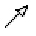
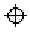
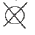
(정답률: 84%)
30. 다음 그림의 치수 기입에 대한 설명으로 틀린 것은?
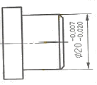
- 기준 치수는 지름 20 이다.
- 공차는 0.013 이다.
- 최대 허용치수는 19.93 이다.
- 최소 허용치수는 19.98 이다.
(정답률: 67%)
31. 다음 중 치수와 같이 사용하는 기호가 아닌 것은?
- Sø
- SR
- □
(정답률: 85%)
32. 제도 표시를 단순화하기 위해 공차 표시가 없는 선형 치수에 대해 일반 공차를 4개의 등급으로 나타낼 수 있다. 이 중 공차 등급이 “거칢”에 해당하는 호칭 기호는?
- c
- f
- m
- v
(정답률: 48%)
33. 그림과 같이 표면의 결 도시기호가 지시되었을 때 표면의 줄무늬 방향은?
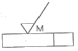
- 가공으로 생긴 선이 거의 동심원
- 가공으로 생긴 선이 여러 방향
- 가공으로 생긴 선이 방향이 없거나 돌출됨
- 가공으로 생긴 선이 투상면에 직각
(정답률: 65%)
34. 다음 기호가 나타내는 각법은?
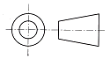
- 제 1 각법
- 제 2 각법
- 제 3 각법
- 제 4 각법
(정답률: 81%)
35. 다음 중 다이캐스팅용 알루미늄 합금 재료 기호는?
- AC1B
- ZDC1
- ALDC3
- MGC1
(정답률: 77%)
36. 표면 거칠기 지시기호가 옳지 않은 것은?
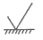
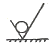
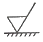
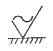
(정답률: 85%)
37. 핸들이나 암, 리브, 축 등의 절단면을 90° 회전시켜서 나타내는 단면도는?
- 부분 단면도
- 회전 도시 단면도
- 계단 단면도
- 조합에 의한 단면도
(정답률: 85%)
38. 투상도를 나타내는 방법에 대한 설명으로 옳지 않은 것은?
- 형상의 이해를 위해 주 투상도를 보충하는 보조 투상도를 되도록 많이 사용한다.
- 주 투상도에는 대상물의 모양, 기능을 가장 명확하게 표시하는 면을 그린다.
- 특별한 이유가 없는 경우 주 투상도는 가로길이로 놓은 상태로 그린다.
- 서로 관련되는 그림의 배치는 되도록 숨은선을 쓰지 않는다.
(정답률: 70%)
39. 그림에서 나타난 정면도와 평면도에 적합한 좌측면도는?
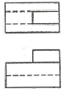
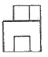
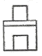
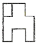
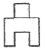
(정답률: 78%)
40. 구멍 ø55H7, 축 ø55g6 인 끼워맞춤에서 최대틈새는 몇 μm 인가? (단, 기준치수 ø55에 대하여 H7의 위치수 허용차는 +0.030, 아래치수는 허용차는 0이고, g6의 위치수 허용차는 -0.010, 아래치수 허용차는 -0.029이다.)
- 40μm
- 59μm
- 29μm
- 10μm
(정답률: 64%)
41. 도면 작성 시 선이 한 장소에 겹쳐서 그려야 할 경우 나타내야 할 우선 순위로 옳은 것은?
- 외형선 > 숨은선 > 중심선 > 무게 중심선 > 치수선
- 외형선 > 중심선 > 무게 중심선 > 치수선 > 숨은선
- 중심선 > 무게 중심선 > 치수선 > 외형선 > 숨은선
- 중심선 > 치수선 > 외형선 > 숨은선 > 무게 중심선
(정답률: 78%)
42. 제 3각법으로 투상한 그림과 같은 정면도와 우측면도에 적합한 평면도는?
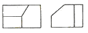
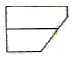
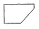
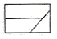
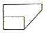
(정답률: 60%)
43. 다음 도면의 제도방법에 관한 설명 중 옳은 것은?
- 도면에는 어떠한 경우에도 단위를 표시할 수 없다.
- 척도를 기입할 때 A:B로 표기하며, A는 물체의 실제 크기, B는 도면에 그려지는 크기를 표시한다.
- 축척, 배척으로 제도했더라도 도면의 치수는 실제치수를 기입해야 한다.
- 각도 표시는 항상 도, 분, 초(°, ‵, ‶) 단위로 나타내야 한다.
(정답률: 65%)
44. 다음과 같이 도면에 기입된 기하 공차에서 0.011 이 뜻하는 것은?
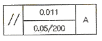
- 기준 길이에 대한 공차 값
- 전체 길이에 대한 공차 값
- 전체 길이 공차 값에서 기준 길이 공차 값을 뺀 값
- 누진치수 공차 값
(정답률: 62%)
45. 다음 중 도면에 기입되는 치수에 대한 설명으로 옳은 것은?
- 재료 치수는 재료를 구입하는데 필요한 치수로 잘림 여유나 다듬질 여유가 포함되어 있지 않다.
- 소재 치수는 주물 공장이나 단조 공장에서 만들어진 그대로의 치수를 말하며 가공할 여유가 없는 치수이다.
- 마무리 치수는 가공 여유를 포함하지 않은 치수로 가공 후 최종으로 검사할 완성된 제품의 치수를 말한다.
- 도면에 기입되는 치수는 특별히 명시하지 않는 한 소재 치수를 기입한다.
(정답률: 60%)
46. 다음 중 파이프의 끝 부분을 표시하는 그림기호가 아닌 것은?
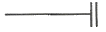
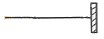
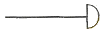
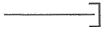
(정답률: 58%)
47. 다음에 설명하는 캠은?
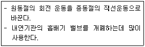
- 판 캠
- 원통 캠
- 구면 캠
- 경사판 캠
(정답률: 46%)
48. 그림에서 도시된 기호는 무엇을 나타낸 것인가
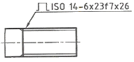
- 사다리꼴나사
- 스플라인
- 사각나사
- 세레이션
(정답률: 60%)
49. 나사의 도시방법에 관한 설명 중 틀린 것은?
- 수나사와 암나사의 골 밑을 표시하는 선은 가는 실선으로 그린다.
- 완전 나사부와 불완전 나사부의 경계선은 가는 실선으로 그린다.
- 불완전 나사부는 기능상 필요한 경우 혹은 치수 지시를 하기 위해 필요한 경우 경사된 가는 실선으로 표시한다.
- 수나사와 암나사의 측면도시에서 각각의 골지름은 가는 실선으로 약 3/4에 거의 같은 원의 일부로 그린다.
(정답률: 51%)
50. 용접기호에서 그림과 같은 표시가 있을 때 그 의미는?
- 현장 용접
- 일주 용접
- 매끄럽게 처리한 용접
- 이면판재 사용한 용접
(정답률: 80%)
51. 평행 핀의 호칭이 다음과 같이 나타났을 때 이 핀의 호칭지름은 몇 mm 인가?
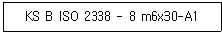
- 1 mm
- 6 mm
- 8 mm
- 30 mm
(정답률: 55%)
52. 스프로킷 휠의 도시방법에서 단면으로 도시할 때 이뿌리원은 어떤선으로 표시하는가?
- 가는 1점 쇄선
- 가는 실선
- 가는 2점 쇄선
- 굵은 실선
(정답률: 39%)
53. 미터 보통 나사에서 수나사의 호칭 지름은 무엇을 기준으로 하는가?
- 유효 지름
- 골지름
- 바깥 지름
- 피치원 지름
(정답률: 63%)
54. 구름 베어링의 호칭기호가 다음과 같이 나타날 때 이 베어링의 안지름은 몇 mm 인가?
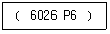
- 26
- 60
- 130
- 300
(정답률: 71%)
55. 스퍼기어의 도시법에 관한 설명으로 옳은 것은?
- 피치원은 가는 실선으로 그린다.
- 잇봉우리원은 가는 실선으로 그린다.
- 축에 직각인 방향에서 본 그림은 단면으로 도시할 때 이골의 선은 가는 실선으로 표시한다.
- 축방향에서 본 이골원은 가는 실선으로 표시한다.
(정답률: 44%)
56. 표준 스퍼 기어에서 모듈이 4이고, 피치원지름이 160mm일 때, 기어의 잇수는?
- 20
- 30
- 40
- 50
(정답률: 86%)
57. CAD 시스템의 기본적인 하드웨어 구성으로 거리가 먼 것은?
- 입력장치
- 중앙처리장치
- 통신장치
- 출력장치
(정답률: 75%)
58. 좌표 방식 중 원점이 아닌 현재 위치, 즉 출발점을 기준으로 하여 해당 위치까지의 거리로 그 좌표를 나타내는 방식은?
- 절대 좌표 방식
- 상대 좌표 방식
- 직교 좌표 방식
- 원통 좌표 방식
(정답률: 75%)
59. 컴퓨터의 처리 속도 단위 중 ps(피코 초)란?
- 10-3초
- 10-6초
- 10-9초
- 10-12초
(정답률: 60%)
60. 다른 모델링과 비교하여 와이어프레임 모델링의 일반적인 특징을 설명한 것 중 틀린 것은?
- 데이터의 구조가 간단하다.
- 처리속도가 느리다.
- 숨은선을 제거할 수 없다.
- 체적 등의 물리적 성질을 계산하기가 용이하지 않다.
(정답률: 60%)